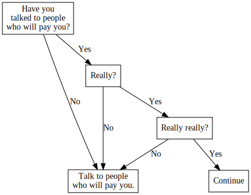

Money for Open Source
The first step in making money for open source software is recognizing that you’re looking to make two steps forward, having already made one big step back. Open source software can be incredibly valuable. But in practice, “open source” means “free of charge”. If nobody’s paying any money, you aren’t making any money.
Getting people to pay for software is always a bit of a game. Getting people to pay for open source is the game on Hard Mode. Open source advocates talk down “proprietary” software. But that approach built the software industry. Programmers have made many more dollars that way.
Some hard problems are worth it. Programmers make money for open source, too. Among those programmers, we can see some patterns of success that appear general and repeatable. This post lays out a general, imperfect plan for finding one that works for you.
Step 1: Talk to the people who will pay you.
First, you must meet people you think will pay you for open source. Ideally in person. You must talk to them. You must talk to them about paying you money for open source.
Later on, I'll offer a decision tree for choosing an approach to getting paid for open source. Each approach has worked before, and could work again. Each approach represents a kind of deal you might make, or relationship you might have, with people who will pay you.
You will have to experiment. The first approach you take may not be the approach that ends up working for you. But in the end, it’s not just, or even mostly, about what works for you. It’s about what works for you, your project, and the people doing the paying.
If you work through the decision tree on your own, you’ll probably find an approach that works for you. Maybe you’ll get lucky, and find that approach works for those on the paying side, too. But your chances of success dramatically improve if you work through the decision process with input from both sides.
Business is always a bit guess-and-check. The better you guess, the less you have to check. Guessing well is far more about listening and negotiating than “engineering” in any loose sense. This guide cannot do your listening or negotiating for you.